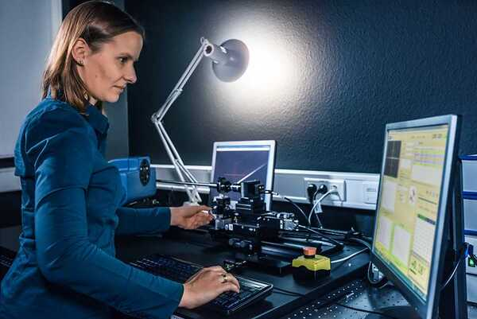

Оператор электронно-вычислительных и вычислительных машин
Профессия
Оператор электронно-вычислительных и вычислительных машин (ЭВМ) — это специалист, обеспечивающий бесперебойную работу компьютерного оборудования, серверов и сопутствующей инфраструктуры. В сфере IT такой оператор занимается не только базовым обслуживанием техники, но и мониторингом систем, обработкой данных, поддержкой сетевых ресурсов и выполнением задач по автоматизации рутинных процессов.
В чём заключается
Работа оператора ЭВМ включает широкий спектр задач: от настройки и ремонта оборудования до администрирования баз данных и резервного копирования информации. Он следит за исправностью серверов, рабочих станций и периферийных устройств, оперативно устраняет технические сбои, ведёт журналы учёта оборудования. В современных условиях операторы также работают с облачными сервисами, участвуют в развёртывании виртуальных машин и контролируют выполнение автоматизированных скриптов. Важная часть работы — взаимодействие с другими IT-специалистами (системными администраторами, программистами) для обеспечения бесперебойной работы инфраструктуры.
Отрасли
В IT-компаниях операторы поддерживают работу дата-центров и серверных ферм, обеспечивая бесперебойную обработку данных. В банковском секторе операторы контролируют транзакционные системы и защищают финансовую информацию. В научных организациях они обслуживают высокопроизводительные вычисления для сложных симуляций. В промышленности операторы работают с системами автоматизированного управления производством (АСУ ТП), а в медицине — поддерживают медицинские базы данных и диагностическое оборудование.
Суть работы
Оператор ЭВМ — это «диспетчер» цифровой инфраструктуры. Его работа начинается с проверки состояния оборудования: диагностика жестких дисков, мониторинг нагрузки на серверы, обновление ПО. При возникновении сбоев оператор определяет причину — будь то перегрев процессора, вирусная атака или ошибка в скрипте — и устраняет её, следуя регламентам. Например, при отказе сервера он может перераспределить нагрузку на резервные мощности, а при утечке данных — заблокировать компрометированные учётные записи. Современные операторы всё чаще используют инструменты автоматизации (например, Ansible для управления конфигурациями) и работают с интернетом вещей (IoT), где требуется контроль датчиков и удалённых устройств.
Образование
1. Колледжи/Техникумы
Наладчик аппаратного и программного обеспечения
Компьютерные сети
Системное администрирование
2. Курсы повышения квалификации
3. Сертификации